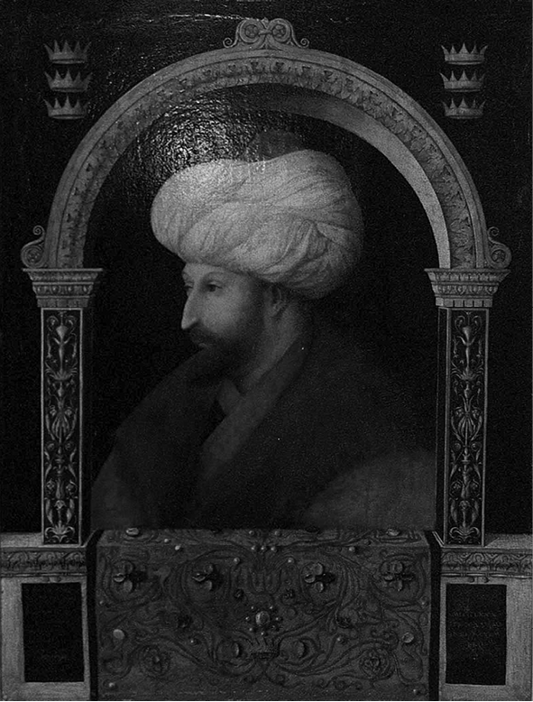
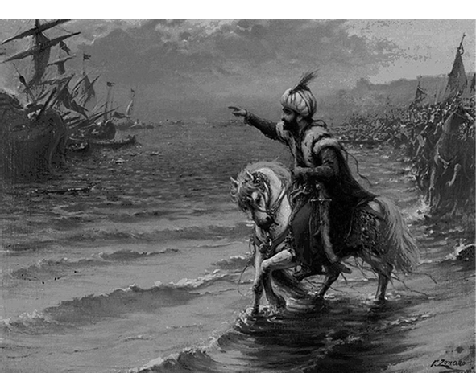
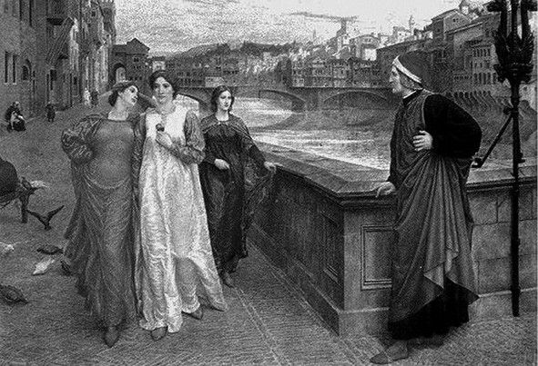
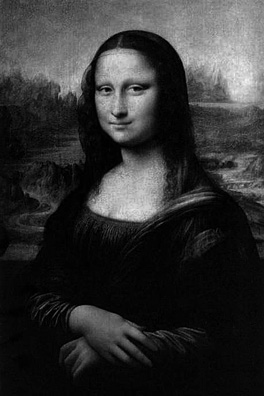
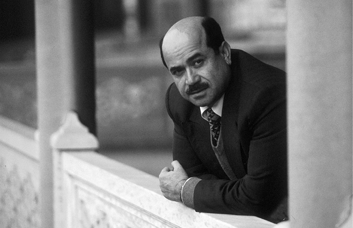
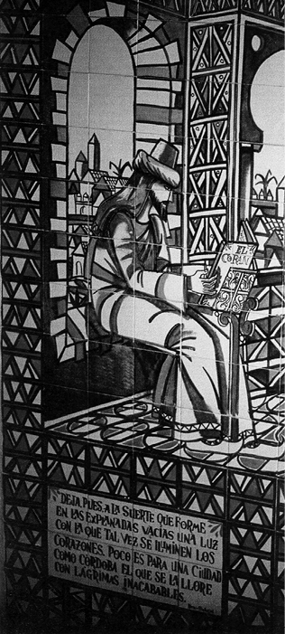
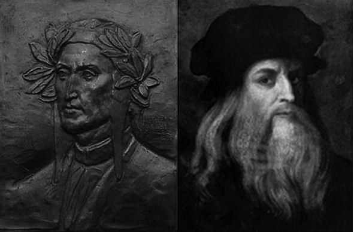
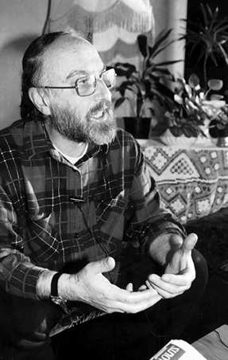

Rönesansı Bizans Değil Endülüs Tetikledi!
İstanbul’un fethi ile birlikte Bizans’tan İtalya’ya kaçan bilim adamı ve düşünürlerin Rönesans’a ön ayak olduğu görüşü zannedildiği gibi sadece bize özgü hamasetle değil, Batı’nın ‘aidiyet’ arayışıyla da ilişkili. İlişkisiz olan ise İstanbul’un fethi ile Rönesans.
İstanbul’un fethinin sonuçları babında dile getirilen bir cümle; “Bizans’tan kaçan bilim adamları ve düşünürleri Batı’ya kaçarak Rönesans’a ön ayak olmuşlardır.” Bu görüşün tarih kitaplarında hâlâ yer alıyor olmasının yani gerçekliğinin sorgulanmaması zannedildiği gibi yalnız Türk hamaset tarihi ile açıklanamıyor. Dünya tarihinin akışını değiştiren bir etkiye sahip olmakla birlikte Rönesansı İstanbul’un fethine bağlamak oldukça dolaylı hamasi bir söylemdi şüphesiz. Batı, yeniden inşasında önemli rol oynayan antik Yunan felsefeyle haşir neşir olma süreçlerini açıklarken Bizans’tan kaçanlara tutunuyor. Modern Batı, Ortaçağ’dan çıkışını Rönesans gibi büyük atılımları antik Yunan’a dönmekle açıklıyordu. Dolayısıyla antik Yunan’la tanışma hikâyesini yeniden yapılandırarak İstanbul’un fethiyle birlikte Bizans’tan kaçan düşünür ve bilim adamlarına bağlamaya çalışıyordu. Biz de ‘namımız yürüsün’ diyorduk lakin ‘namımız’ dışındaki gerçekler hiç de öyle değildi.

Fatih Sultan Mehmed
İstanbul’un fethiyle birlikte Batı’ya kaçanların sayısı aslında iki elin parmakları adedince. Georgios Gemistos Pethon, Basiliüs Bessarion, Georges Scholarius Gennadius, John Agyropulos, Michel Apostolis, Demetrius Chaicandiles, Geroge Aimouetzes, Tehodoros Gaza. 15 yıl boyunca Rönesansı doğuran sebepler üzerinde yaptığı çalışmanın sonuna doğru yaklaşan Prof. Dr. Bekir Karlığa, tek tek isimler üzerinde tahlil yaptıktan sonra “Bunların hepsi üçüncü sınıf düşünürlerdi. Ne felsefe tarihinde yerleri var ne de literatüre kazandırdıkları bir şey vardı” demekten kendini alamıyor. “Doğruyu söylemek gerekirse Bizans’tan İtalya’ya giden bilgin ve düşünürler arasında ikinci sınıf denilebilecek kimse yoktu. Onlar, Rönesansı hazırlamaktan ziyade Batı’da Grekçe öğretmenliği yaparak geçimlerini sağlıyorlardı.” Ki, bir kısmı Fatih’in daveti üzerine geri dönmüşlerdi. Ünlü Bizantolog Runciman bu sözü edilen kişiler dolayımında Batı dünyasının, son Bizanslıların ne yapmış olduklarıyla ilgili olmadığını onların sadece geçmişi öğrenmeyle alakalı olduklarını belirterek, “Gerçekte ise Bizanslılar’ın bu yüzyılda söyleyecek bir şeyleri yoktu” diyor. Prof. Dr. Mehmet Ali Kılıçbay ise sözü edilen Grekçe öğretmenliğinin bile ciddiye alınır bir yanı olmadığını, daha 13. asra varmadan Batı üniversitelerinde Grekçe öğretildiğini kaydediyor.

Rönesans sanatçısı Bellini’den Fatih tablosu (yan tarafta)
“İstanbul’dan ayrılanların içinde bilim adamı varlığından söz edilemez” diyor Kılıçbay. “ Bizans’ta bilimin ‘b’si bile olmamıştır. Gramerci, edebiyatçı tarihçi var bunların içinde. Tarihçileri de vakanüvistler; bilimsel tarihçi değil. İstanbul’dan giden adam sayısı bir elin parmaklarını geçmez zaten.”Kılıçbay, her şeyin Ortodoks inancıyla açıklandığı bir yerde en çok tartışılan şeyin gerçekten ‘meleklerin cinsiyeti’ konusu olduğunu, Bizans’ta başka bir şeye kafa yorulmadığını da ekliyor.

Rönesansı ve Batı toplumundaki değişimi resimler üzerinden izlemek mümkün
Görüştüğümüz felsefeciler ve bilimadamları ‘Bizans’ta Rönesansa yön verecek düşünür olsaydı Bizansa da faydası olması gerekirdi demekten kendilerini alamıyorlar. Yani Bizans’ın ve buradan ayrılanların kendilerine hayrı yoktu ki gittikleri yere hayrı olsun demeye getiriliyor. Bekir Karlığa şöyle bir soru yöneltiyor: “Uzun ve görkemli tarihi boyunca Bizans’ta evrensel çapta kaç bilgin ve düşünür yetişmiştir ki bunların arta kalanları İstanbul’un fethi ile birlikte Batı dünyasına gidip Rönesans gibi tarihin akışını değiştiren önemli bir atılım başlatmış olsunlar?” Karlığa, Bizans’ta ismi geçen düşünürlerin evrensel bilim ve düşünceye de kayda değer hiçbir katkı sağlamadıklarını söylerken ünlü bilim tarihçisi Sarton’un 14. yüzyıl Bizans bilim ve düşüncesi ile ilgili şu tespitine atıfta bulunuyor: “Yunanca konuşan bilim adamları, kendi atalarının fikirlerini yeniden keşfetmek için Arapların ve İranlıların uyarısına gerek duyuyorlardı. Bizans’ın bilimsel düşünce düzeyinin bu kadar düşük olduğunu düşünmek gerçekten üzücü.”
Felseciler ve felsefe tarihçileri böyle derken Türkiye’de bulunan az sayıdaki Bizantoloğa konu hakkında ne düşünüyorlar diye mikrofon uzattığımızda konu hakkında görüş belirtmek istemeyen kişilerle karşılaştık. Sözgelimi Prof. Dr. Işın Demirkent, “İstanbul’un fethiyle birlikte İtalya’ya kaçanların Rönesansa ön ayak oldukları görüşünde olanlar, ‘etkisi olmuştur’ diyenler, ‘olmamıştır’ diyenler var” derken kendi kanaatinin hangisine denk düştüğünü açıklamak istemedi. “Bizans İmparatorluğu’nda Din-Devlet İlişkileri” adlı bir çalışması olan Bizans uzmanı Prof. Dr. Mehmet Çelik ise Bekir Karlığa ve Mehmet Ali Kılıçbay’la aynı kanaatte. Onlara ilaveten fetihle birlikte Bizans’tan çok değerli kitapların da Batıya götürüldüğü iddiasının gerçeği yansıtmadığını söyleyen Mehmet Çelik 12. yy’da Haçlılar İstanbul’u aldıklarında soyguncuların İstanbul’da ne var ne yoksa götürdüğünü de ekliyor. “Fener Patrikhanesi’nin tüm kütüphanesini elden geçirdim. O dönemde yazılmış hiçbir şey yok.”
“İstanbul fethedildiğinde eğitim ve kültür açısından bitmiş bir İstanbul vardı. Fikir, düşünce, ilahiyat planında çaplı insanlar da yoktu. Dolayısıyla bilim namına İstanbul’da bir şey yoktu, ‘tartışma’ söz konusu değildi. 11. yy’dan sonra zaten eğitim tamamen dini ağırlıklı olmuştur” şeklinde konuşuyor. Mehmet Çelik, İstanbul’un fethi Rönesansı tetikledi şeklindeki görüşün hiçbir bilimselliği olmadığını ilave ediyor. “Rönesansı tetiklemeyi bırakın hiçbir katkısı olmamıştır. İstanbul’dan gidenlerse zaten asilzadelerdi.”

Rönesansın ünlü sanatçısı Leonardo de Vinci’nin Mona Lissa tablosu
Bizans’ın son dönemine ilişkin “Türkiye-İtalya İlişkileri” başlıklı bir çalışması olan Prof. Dr. Şerafettin Turan, tarih kitaplarında yer alan ‘abartılı’ ifadelerle bilim dünyasıyla dalga geçildiği kanaatinde. İstanbul’dan gidenlerin çorbada tuzu bulunabileceğini, fakat “şöyle böyle etkiledi” gibi bir ifadenin kullanılamıyacağını dile getiriyor.
İstanbul fethedildiğinde Rönesans gerçekleşmekteydi
1453’te, İstanbul fethedildiğinde Rönesansın geldiği nokta, tartışmanın diğer bir boyutu. Prof. Dr. Mehmet Ali Kılıçbay, bu dönemde Rönesansın sembol eserlerinin ortaya çıktığını ve çıkmakta olduğunu belirtiyor. Dante, “İlahi Komedya”yı yazmıştır sözgelimi. Leonardo da Vinci eserlerini vermektedir, Ariosto gibi Rönesansın büyükleri ortaya çıkmıştır. Rönesansın en önemli enstrümanı Hümanizma çoktan etkisi göstermektedir. Kılıçbay’a göre, Fatih’in portresinin bir Rönesans sanatçısı olan Bellini tarafından yapılması, Rönesansın hangi süreçte olduğunu göstermesi bakımından önemli.
Yunan hayranlığı etkili oldu
Hal böyleyken İstanbul’un fethiyle Bizans’tan kaçanlar Rönesansa ön ayak oldu kanaati nereden ortaya çıkmıştır? Bekir Karlığa’ya göre bu kanaatin oluşmasında ve bu aydınların abartılmasının temelinde Batı’nın Yunan hayranlığı yatmakta. “Aydınlanma sonrası Rönesansın değerlendirilmesi safhasında artık Yunan hayranlığının Batı’da zirveye çıktığı bir dönemdir. Ve Yunanlıların bağımsızlık istek ve arzularının başladığı dönemde, 18. ve 19. yy’da Bizans’ın öne çıkartılması hedeflenmiştir.” Yani modern dönemlerde tarihini yeniden inşa edildiği bir zamanda Bizans’a böyle bir ayrıcalık tanınır. Bekir Karlığa, Batı’nın Rönesans konusunda önyargılı davranarak bazı gerçekleri örtbas etme, İstanbul’un fethi -Rönesans gibi hiçbir gerçekliği olmayan bağlantılar kurma peşinde olduğunu belirtiyor. Ta ki, Ortaçağ çalışmalarının yoğunlaştığı 19. yy ve 20. yy’da ortaya çıkan ‘inkar edilemez’ gerçeklere kadar. Kilisenin desteklediği Ortaçağ çalışmaları Rönesansla ilgili başka bir gerçeği ortaya çıkarmıştır. Yani Rönesans öncesi denilen döneme ilişkin yapılan çalışmalar bu önemli olayın gerçek tetikleyicilerini ortaya çıkarmıştır bir nevi. 13. yy dönüşümü 20. yy’ın başlarına kadar bilinmemekte, bilinse bile bilinmek istenmemektedir. “Hıristiyan Batı’nın Hıristiyan Ortaçağının keşfedilmesi için yapılan çalışmalar Müslüman Ortaçağının keşfini doğurmuş, böylelikle İslam düşüncesinin ve İslam biliminin Batı’ya aktarılması gündeme gelmiştir.”
13. yy dönüşümü
Dolayısıyla 16. yy Rönesansından çok artık 13. yy’da başlayan bir Rönesanstan söz edilmekte. “Bütün düşünce tarihleri artık Rönesansın 40-50 yıllık bir periyoda sığdırılmasının yanlış olduğu, onun yerine 300 yıl geriye gidilmesi gerektiği ve 300 yıllık bir merhalede şekilleniş, meydana geliş olarak algılama ortaya çıkmıştır. Ama bu anlayış bizim felsefe kitaplarına daha sirayet etmedi. Yakın bir zamana kadar İslam felsefesi olduğu bile kabul edilmiyordu” diyor Bekir Karlığa.

Prof. Dr. Bekir Karlığa’ya göre, Bizans’tan İtalya’ya gidenler 3. dereceden felsefecilerdir. Onlara “Grekçe öğretmenleri” demek daha doğru olur.
Peki Rönesans’ı kim yaptı?
Söz dönüp dolaşıp nereye geliyor? Yani Rönesansı Bizans’tan gidenler yapmadı da kim yaptı, ya da nasıl oluştu? Yukarıda sözü edilen 13. yy dönüşümünden ne kastedilmektedir? Bekir Karlığa “Rönesansın başlangıcının 13. yy’da atılan adımlar olduğunu söylüyor. Öncelikle Paris Sorbon Üniversitesi, Londra’da Oxford ve Camridge Üniversiteleri kurulur. Üniversitelerin kuruluşu ve buralarda okutulmaya başlayan kitaplar Avrupa’da önemli düşünce akımlarının doğmasına yol açar. İlk Latinceye tercüme edilen kitaplardan biri İbni Sina’nın 4 bin sayfalık “Şifa” sı olur. 20. yy’ın önemli Ortaçağ tarihçilerinden Ethen Jilson “Şifa, Latinceye tercüme edildiği zaman Avrupa’daki aydınlar bu eserin büyüklüğü karşısında adeta çarpıldılar, şoke oldular” demektedir. En büyük kütüphanelerinde bile üç beş din dışı kitap bulunmayan Avrupa için bu eserin tercüme edilmesi kayda değer etki oluşturur ve tercümelerin ardı arkası kesilmez. Kısa bir süre sonra İbni Rüşd’ün eserleri Latinceye kazandırılır. İbni Sina, İbni Rüşd ve Aristo’nun eserleri Avrupa Üniversiteleri’nin temel ders kitabı ve el kitabı haline gelir. Ayrıca İbni Sina’nın Kanun isimli tıp kitabı da tercüme edilir. Bekir Karlığa bir kitabın altı ayrı tercümesi olduğuna dikkat çekerek tercüme furyasının boyutunu ortaya koyuyor. Hem tercümeler hem de üniversitelerde okutuluyor olması Avrupa’da yeni bir fikir hareketinin doğmasına yol açar.
İbn Rüşd’ün özgürlükçü yorumu
Akımların en önemlisi üniversitelerde ortaya çıkan İbni Sinacılar (Avisenist) ve İbni Rüşdcüler (Averoist) akımlarıdır. Mehmet Ali Kılıçbay, Aristoteles şarihi olarak İbni Rüşd’ün özgürlükçü ve ‘liberal’ yorumunun Avrupa’nın yenilikçi kanadını çok etkilediğini söylüyor. Zaten İbni Rüşdcülük en büyük düşünce akımlarından biri olarak karşımıza çıkıyor ilerleyen yıllarda. Avisenizm ve Averoizm kısa zamanda Batı üniversitelerinde doktriner birer ideoloji haline dönüşür. Kilise bundan rahatsız olur ve bu akımların yaygınlaşmasını önlemek için 20 küsur yasaklama kararı alır fakat başarılı olamaz. Başaramayınca bu görüşlere karşı alternatif görüşler oluşturma ihtiyacını duyar. İbni Sina’yı, İbni Rüşd’ü okuyup onların Hıristiyanî yorumlarını ve eleştirilerini yapan insanların yetiştirilmesine çalışılır. Bu bağlamda büyük Albert, Albertos Magnus ve onun öğrencisi Ortaçağ’ın en büyük düşünürü sayılan Saint Thomas gibi düşünürler İbni Sina’yı, İbni Rüşd’ü okuyup eleştirirken, Aristo’yu yorumluyorlar ve yeni bir din ve felsefe anlayışını şekillendirirler. Tartışmalar, akımlar derken 13. yy bilim ve felsefe alanında Avrupa’nın uyanmaya başladığı ‘akıl’ ve ‘Hiristiyanlık dışı öğretilerle’ haşir neşir olduğu yüzyıl olarak karşımıza çıkar.

İbn Rüşd, Rönesansa giden sürecin en büyük öncülerinden biri olarak görülüyor
Bekir Karlığa yaptığı çalışmada Avrupa’da hangi üniversitelerde kimlerin İbni Rüşdcü olduklarını ve bu akımın Rönesansa nasıl ön ayak olduğunu uzun uzun anlatıyor. Paris, Londra ve İtalya’daki üniversitelerde İslam düşünürlerinin tesirleri ortaya çıktığı ve fikirlerinin okutulduğu tartışmaya gerek duyulmayacak açıklıkta. Mehmet Ali Kılıçbay’a, “Size göre Rönesansın oluşumu nasıldır?” gibi bir soru yönelttiğimde “Konu ortada, şuna buna göresi olmaz” cevabı alıyorum.
Yahudi İbni Rüşdcüler...
İbni Rüşdcülerin değişik üniversitelerde kümelenmesi kiliseyi rahatsız eder. Sözgelimi Paris Sorbon’dan kovulan İbni Rüşdcüler “Fakülte Dezhar” adında teknik bir üniversite kurarlar. Kilise durumdan rahatsız olsa, birtakım yaptırımlar yapsa da İbni Rüşdcülük akımı Avrupa’ya damgasını vuracaktır. Latin İbni Rüşdcülerinin önde gelen isimleri şöyle: Jena de la Rochelle, Boece de Dasie, Roger Bacon ve Adam de Buckfield, Siger de Brabant, Jena de Jandun, Dante Alighieri… Ayrıca Bologna ve Padoa üniversitesi çevresinde üniversite adıyla anılan Bologna İbni Rüşdcüleri ve Padoa İbni Rüşdcüleri vardır. Bekir Karlığa, yeni araştırmalar çerçevesinde İtalyan Rönesansının kurucusu Dante’nin, İbni Rüşd’ün tesirinde, İbni Rüşd hayranı ve İbni Rüşd’ü savunan bir kişi olduğunu söylüyor.
İbn Rüşd’ün eserlerinin İbraniceye çevrilmesiyle ortaya çıkan Yahudi İbni Rüşdcülüğü de kayda değer bir akım olarak ortaya çıkar. İsaac Albalag, Moise de Ranbonen, Levi Ben Gershom, Eliya Delmedigo, Jacop ben Abba Mari, Mois ibnh Tibbon, Connymos ben Canymos ben Meir gibi 40 civarındaki Yahudi İbni Rüşdcüleri vardır. İbni Rüşd etkisine karşı karşı İbni Rüşd’ü okuyarak, reddiye yazarak İbni Rüşd’den etkilenen Hıristiyan düşünürlerin isimleri ise şöyle; Büyük Albert, Saint Thomas, Saint Bonaventure, Robert Kilwerdby, Duns Scot, Gilles de Rome, Raimond Lulle.

Rönesansın sembol sanatçıları Dante ve Leonardo de Vinci İstanbul’un fethinden önce eserlerini vermişlerdi
Bekir Karlığa, bu düşünürlerin birkaç şeye karşı çıkarken İbni Rüşd’ün pek çok fikrini alıp benimsediklerini belirtiyor. Kilise İbni Rüşdcülüğü tümüyle yasaklamasına rağmen İbni Rüşdcüler faaliyetlerini sürdürüyorlar. “1650 yılında kıtanın en kuzeyinde yani bugünkü Polonya’da bile Grako Üniversitesinde İbni Rüşdcülerin ders verdiği biliniyor” diyor Karlığa.
Yukarıda sözü edilen İbn Rüşd akımları neyi doğurmuştur sorusuna şöyle bir açıklama getiriyor Karlığa: “Bu hareket üç beş ana noktayı değiştirdi. Bunlardan birisi bilimle din arasındaki ilişkiyi yeniden şekillendirmek gereği duydu. Ortaçağda skolastik felsefenin, din adamlarının ‘felsefeye gerek yoktur’ tezi reddedildi. Çünkü Bizansla Roma Hıristiyanlığı kabul ettikten sonra kilise felsefenin din karşıtı olduğunu ilan ederek felsefeyi reddetmiş ve felsefe kitaplarını yasaklamışlardı. Bizans bunu çok kez yaptı. İlkin Justinyanus yaptı, 529 yılında Atina felsefe okulunu kapattı ve filozofları sürdü. Bizans’ta 9. yy’da yine bir anti felsefe hareketi var. 13. yy’da Bizans’ta felsefenin lüzumsuzluğu tartışılıyor ve öyle görülüyor. Bizans her şeyi Ortodoks mezhebi çerçevesinde yerleştirmeye çalışıyor. Batı’da da aynı şey söz konusu. Batı’da 13.yy’a kadar felsefe resmen yasaklanmamış ama felsefeye ilgi çok azalmış, hemen hemen hiç yok.”
Mehmet Ali Kılıçbay, Rönesansta olan şeyi, “zihniyet devrimi, farklı bir bakış açısıyla bakışın başlaması” olarak yorumluyor. “Hıristiyanlığın ezici tavrına karşı dayanak noktası olarak Hıristiyanlığın olmadığı dönem bulunmuştur.”

Mehmet Ali Kılıçbay, Bizans’ta bilimin ‘b’sinin bulunmadığını dolayısıyla Rönesansa etki etmesinin sözkonusu olmadığını söylüyor. Kaldı ki, Rönesans 3 asır önce İbni Rüşd’ün “özgürlükçü” yorumlarını içeren tercümeleriyle başlamıştır bile.
13. yy’a yani İslam dünyasından yapılan tercümelere kadar Platon’un iki, Aristo’nun üç kitabı tanınmakta, birkaç da Hıristiyan filozofun kitabı bilinmektedir. Ki, felsefe denildiğinde din dışındaki bütün bilimler kast edilmekte. Bekir Karlığa bu dönemi şöyle özetliyor: “Demek ki din dışı bilgilere de ihtiyaç vardı. Çünkü Müslümanlara bakıyorlar, din dışı bilgilerle gelişmeye başlamışlar, İslam ilimlerine bakıyorlar, Haçlı savaşları münasebetiyle, Endülüs İslam dünyasına ‘ticaret’ vesilesiyle geliyorlar. Böylece skolastik kilisenin bu anlayışı yıkılmaya başlıyor. İkincisi milli diller doğuyor. Milli dillerle beraber yeni edebiyat ortaya çıkıyor. Rönesansa kadar edebiyatın temel konusu dini büyükleri, din liderlerini ululamak, tazim etmek iken Rönesansla birlikte dünyevi konulara, dünyevi hazlara da yer veriliyor. Ve üçüncü bir husus insan anlayışı değişiyor. Kaderci, fatalist, ‘teslimiyetçi’ insan anlayışından araştırmacı mücadeleci çalışan çırpınan insan kültürü ortaya çıkıyor.”
16. yy nerede, 13. yy nerede. Ne Bizans’tan kaçan on kişinin yaptıkları söylenen şeylere sığınarak yapılan böbürlenme, ne de Batı’nın İslam dünyasından etkilenerek geçirdiği evrimi inkar ederek yeni “yalancı” kahramanlar üretmeye ihtiyaç var. Mehmet Ali Kılıçbay’ın dediği gibi “ Bu eşyanın tabiatına aykırı bir kere...”
Aksiyon 442. sayı